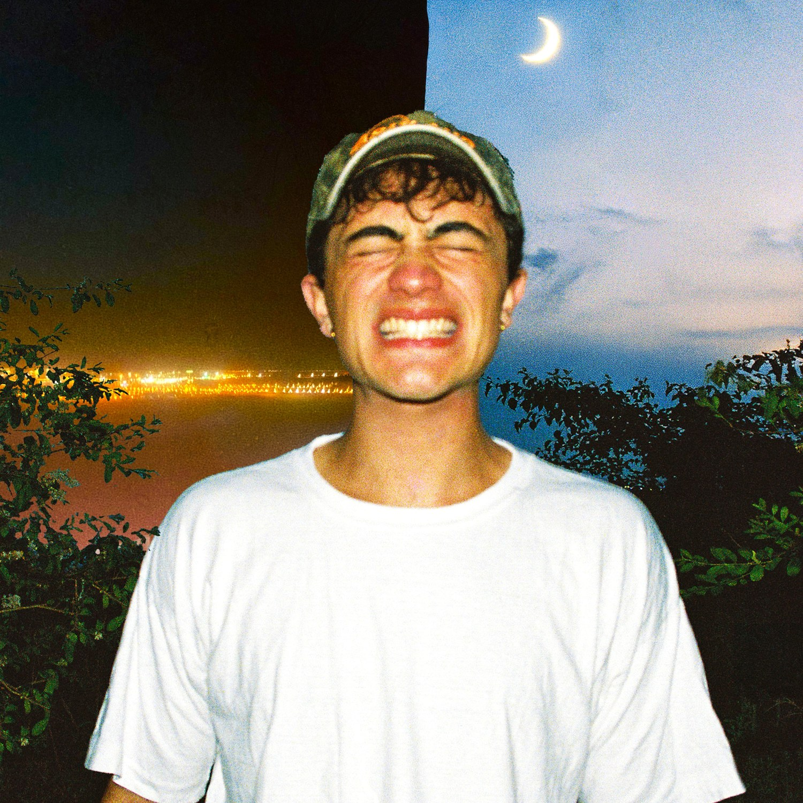
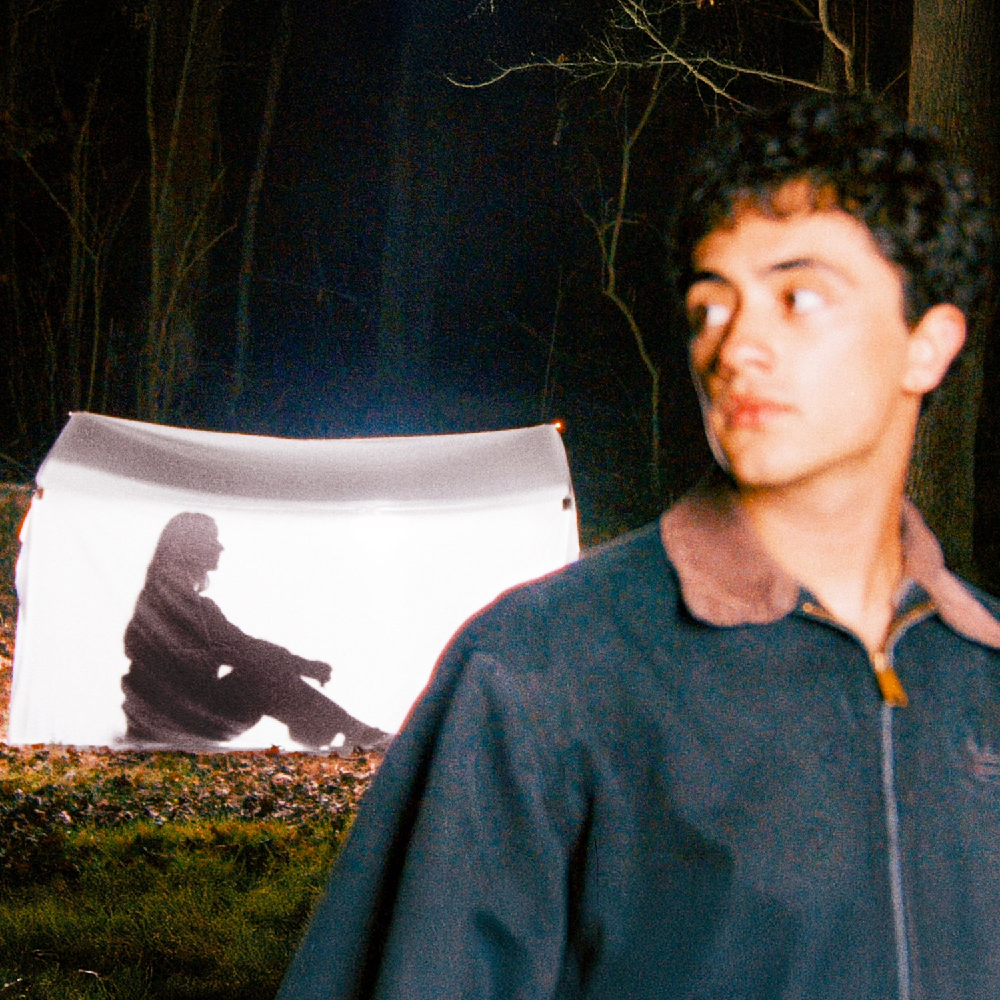
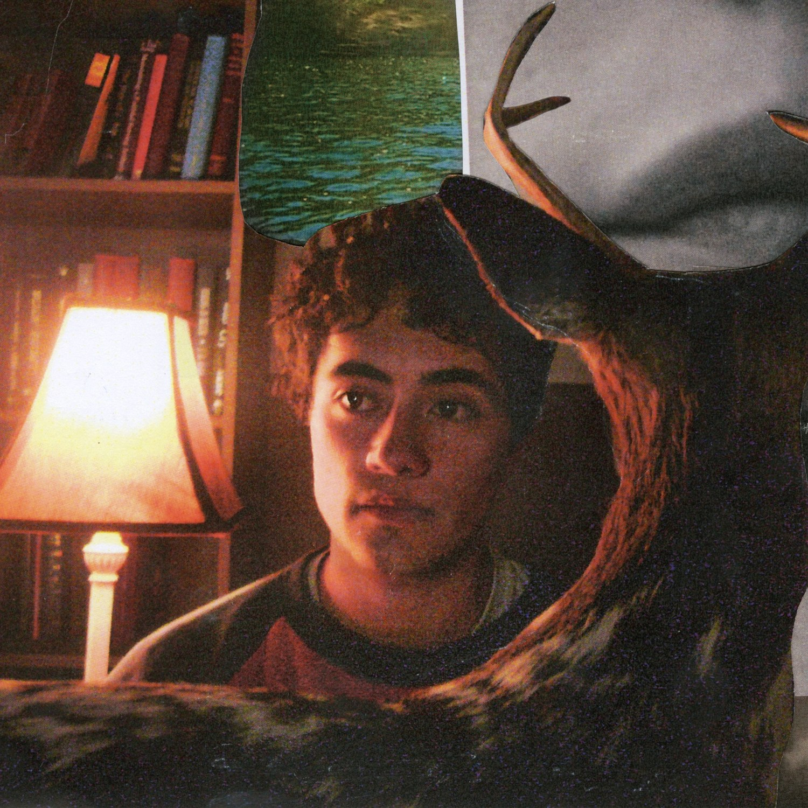
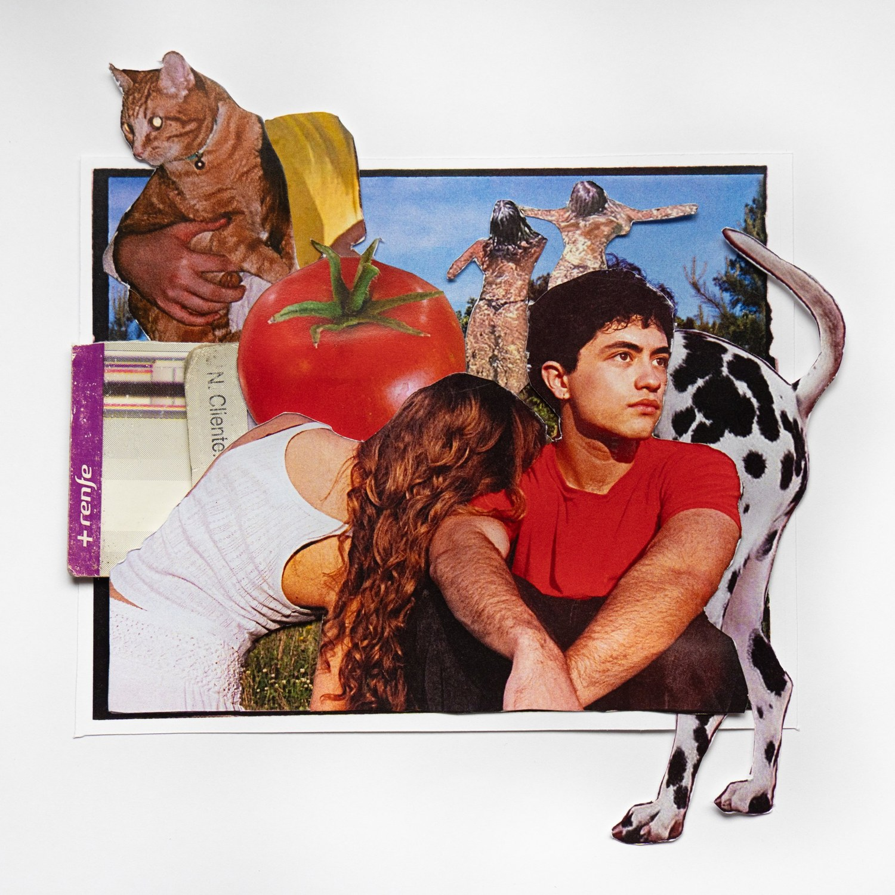
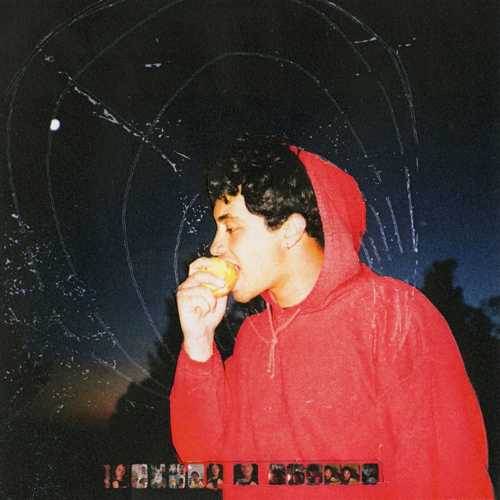

<!doctype html>
<html lang="en">
<head>
<meta charset="utf-8">
<title>/songs — Alder Cote</title>
<meta name="viewport" content="width=device-width, initial-scale=1">
</head>
<body>
<style>:root{--page:#111111;color-scheme:dark}html,body{background:var(--page)}body{margin:0;overflow-x:hidden}#app{width:max-content;margin:0 auto}a{cursor:pointer}
body{margin:0}
.ix a{color:#FCFBF7;text-decoration:none}
.ix a:hover{color:#FFEE4A}
@keyframes hop{0%{transform:translateY(0) rotate(-6deg)}50%{transform:translateY(-6px) rotate(6deg)}}html,body{height:100%;overflow:hidden}#app{width:100vw;height:100vh}.ix{width:100vw!important;height:100vh!important}</style>
<script src="./site.js"></script>
<div id="app"></div>
<script type="text/x-template" id="tpl0"><div class="ix fg" onClick="{{first}}" style="width: 1440px; height: 900px; position: relative; overflow: hidden; background: #111111; color: #FCFBF7; font-family: Arial, Helvetica, sans-serif">
<video ref="{{vid}}" src="./loop-4k.mp4" poster="./index-paper-hd-still.jpg" autoplay muted loop playsinline style="position: absolute; inset: 0; width: 100%; height: 100%; object-fit: cover; display: block"></video><div style="position: absolute; left: 56px; top: 44px; display: flex; align-items: baseline; gap: 14px; z-index: 5"><a href="index.html" style="font-family: 'Times New Roman', Times, serif; font-size: 24px; color: #FCFBF7; text-decoration: none">alder cote</a><span style="font-family: Arial, Helvetica, sans-serif; font-size: 11px; color: #FCFBF7">/ songs</span></div><button onClick="{{toggle}}" aria-label="{{soundLab}}" title="{{soundLab}}" style="position: absolute; right: 50px; top: 34px; z-index: 6; background: none; border: 0; padding: 6px; cursor: pointer"><svg class="nt" width="30" height="40" viewBox="0 0 30 40" style="display: block; overflow: visible; animation: {{noteAnim}}" aria-hidden="true"><ellipse cx="9" cy="32" rx="7.5" ry="5.5" transform="rotate(-22 9 32)" fill="#FCFBF7"/><rect x="15" y="4" width="2" height="28" fill="#FCFBF7"/><path d="M17 4 C 20 10, 27 12, 26 22 C 25 17, 21 15, 17 14 Z" fill="#FCFBF7"/><line x1="2" y1="40" x2="29" y2="2" stroke="#FCFBF7" stroke-width="1.6" style="display: {{strike}}"/></svg></button><div style="position: absolute; left: 56px; bottom: 48px; width: 360px; font-family: 'Times New Roman', Times, serif; font-size: 16px; display: flex; flex-direction: column; gap: 7px; z-index: 5"><p style="margin: 0 0 2px; font-size: 21px">/songs</p><div style="border-top: 1px solid #FCFBF7; margin-bottom: 3px"></div><div style="display: grid; grid-template-columns: 26px 1fr 50px; gap: 10px; align-items: center"><a href="first-night-of-my-life.html">first-night-of-my-life/</a><span style="font-family: Arial, Helvetica, sans-serif; font-size: 10px; text-align: right">1/5</span></div><div style="display: grid; grid-template-columns: 26px 1fr 50px; gap: 10px; align-items: center"><a href="sentimental-stories.html">sentimental-stories/</a><span style="font-family: Arial, Helvetica, sans-serif; font-size: 10px; text-align: right">2/5</span></div><div style="display: grid; grid-template-columns: 26px 1fr 50px; gap: 10px; align-items: center"><a href="cant-you-just-hold-me.html">cant-you-just-hold-me/</a><span style="font-family: Arial, Helvetica, sans-serif; font-size: 10px; text-align: right">3/5</span></div><div style="display: grid; grid-template-columns: 26px 1fr 50px; gap: 10px; align-items: center"><a href="you-terrify-me.html">you-terrify-me/</a><span style="font-family: Arial, Helvetica, sans-serif; font-size: 10px; text-align: right">4/5</span></div><div style="display: grid; grid-template-columns: 26px 1fr 50px; gap: 10px; align-items: center"><a href="take-what-i-have.html">take-what-i-have/</a><span style="font-family: Arial, Helvetica, sans-serif; font-size: 10px; text-align: right">5/5</span></div><div style="border-top: 1px solid #FCFBF7; margin-top: 3px"></div><p style="margin: 2px 0 0; font-family: Arial, Helvetica, sans-serif; font-size: 10px">aldercote.online by Dates &amp; Figs</p></div>
</div></script>
<script>

class C0 extends DCLogic {
  constructor(props) { super(props); this.state = { sound: false }; }
  renderVals() {
    const on = this.state.sound;
    const set = (want) => { const v = this.v; if (!v) return;
      v.muted = !want; if (want) { const p = v.play(); if (p && p.catch) p.catch(() => {}); }
      this.setState({ sound: want }); };
    return {
      vid: (el) => { this.v = el; },
      soundLab: on ? 'sound off' : 'sound on',
      noteAnim: on ? 'hop .5s step-end infinite' : 'none',
      strike: on ? 'none' : 'inline',
      toggle: (e) => { if (e && e.stopPropagation) e.stopPropagation(); set(!on); },
      first: () => { if (!on && !this.asked) { this.asked = true; set(true); } },
    };
  }
}

</script>
<script>dcBoot(C0, "tpl0", 0);</script>
</body>
</html>
